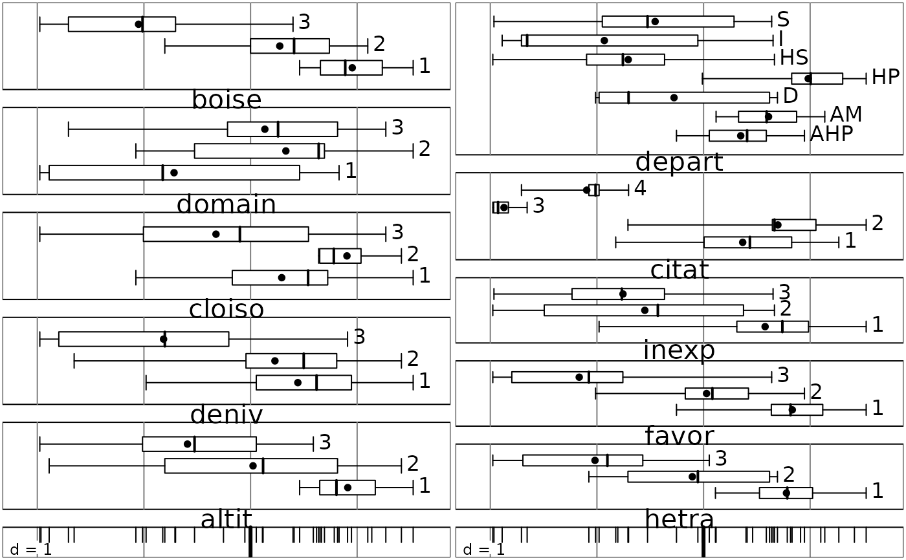

Multiple Correspondence Analysis
dudi.acm.Rddudi.acm performs the multiple correspondence analysis of a factor table.acm.burt an utility giving the crossed Burt table of two factors table.acm.disjonctif an utility giving the complete disjunctive table of a factor table.boxplot.acm a graphic utility to interpret axes.
Arguments
- df, df1, df2
data frames containing only factors
- row.w, counts
vector of row weights, by default, uniform weighting
- scannf
a logical value indicating whether the eigenvalues bar plot should be displayed
- nf
if scannf FALSE, an integer indicating the number of kept axes
- x
an object of class
acm- xax
the number of factor to display
- ...
further arguments passed to or from other methods
Value
dudi.acm returns a list of class acm and dudi (see dudi) containing
- cr
a data frame which rows are the variables, columns are the kept scores and the values are the correlation ratios
References
Tenenhaus, M. & Young, F.W. (1985) An analysis and synthesis of multiple correspondence analysis, optimal scaling, dual scaling, homogeneity analysis ans other methods for quantifying categorical multivariate data. Psychometrika, 50, 1, 91-119.
Lebart, L., A. Morineau, and M. Piron. 1995. Statistique exploratoire multidimensionnelle. Dunod, Paris.
Author
Daniel Chessel
Anne-Béatrice Dufour anne-beatrice.dufour@univ-lyon1.fr
Examples
data(ours)
summary(ours)
#> altit deniv cloiso domain boise hetra favor inexp citat depart
#> 1: 8 1:13 1:12 1: 9 1:10 1:19 1:15 1:20 1:22 AHP:5
#> 2:17 2:14 2: 4 2:13 2:15 2: 5 2:12 2:10 2: 7 AM :4
#> 3:13 3:11 3:22 3:16 3:13 3:14 3:11 3: 8 3: 4 D :5
#> 4: 5 HP :8
#> HS :4
#> I :5
#> S :7
if(adegraphicsLoaded()) {
g1 <- s1d.boxplot(dudi.acm(ours, scan = FALSE)$li[, 1], ours)
} else {
boxplot(dudi.acm(ours, scan = FALSE))
}

if (FALSE) { # \dontrun{
data(banque)
banque.acm <- dudi.acm(banque, scann = FALSE, nf = 3)
if(adegraphicsLoaded()) {
g2 <- adegraphics:::scatter.dudi(banque.acm)
} else {
scatter(banque.acm)
}
apply(banque.acm$cr, 2, mean)
banque.acm$eig[1:banque.acm$nf] # the same thing
if(adegraphicsLoaded()) {
g3 <- s1d.boxplot(banque.acm$li[, 1], banque)
g4 <- scatter(banque.acm)
} else {
boxplot(banque.acm)
scatter(banque.acm)
}
s.value(banque.acm$li, banque.acm$li[,3])
bb <- acm.burt(banque, banque)
bbcoa <- dudi.coa(bb, scann = FALSE)
plot(banque.acm$c1[,1], bbcoa$c1[,1])
# mca and coa of Burt table. Lebart & coll. section 1.4
bd <- acm.disjonctif(banque)
bdcoa <- dudi.coa(bd, scann = FALSE)
plot(banque.acm$li[,1], bdcoa$li[,1])
# mca and coa of disjonctive table. Lebart & coll. section 1.4
plot(banque.acm$co[,1], dudi.coa(bd, scann = FALSE)$co[,1])
} # }